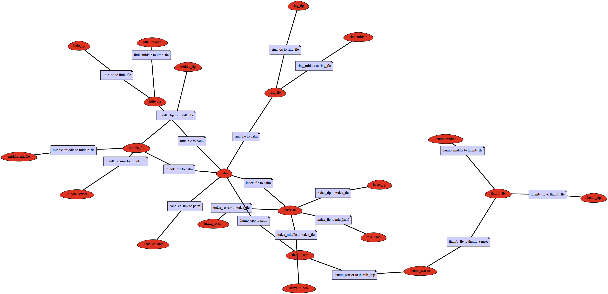
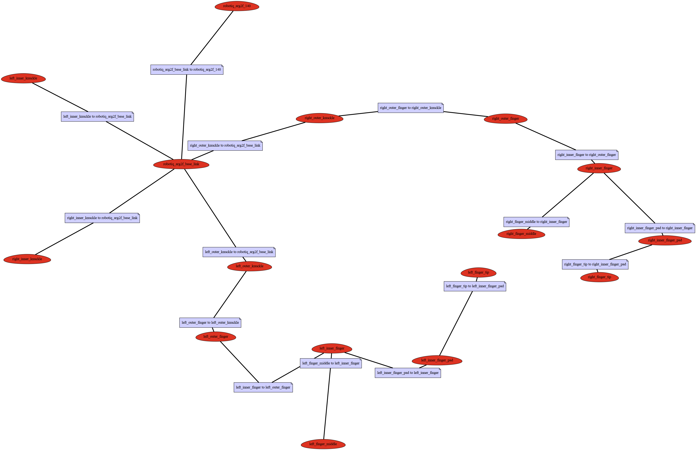

Configuration for a New Robotic Hand¶
Each target hand needs a configuration. These are typically stored in
hand_embodiment.target_configurations, but you can define them in your
own python script or module.
A configuration includes information about the kinematic setup of the hand:
name of finger tip frames
joints per finger
base frame of the hand
pose of base frame with respect to MANO base frame
path to URDF
virtual joints (e. g. coupling of joints)
The following scripts can be used to investigate a hand configuration:
bin/kinematics_diagram.py- generates a kinematic diagram (graph) of the handbin/vis_extended_hand_model.py- visualizes finger tip positions in the visual model of the hand, if you have to define additional finger tips this is a good tool to verify the resultbin/gui_robot_embodiment.py- with this tool you can (1) find an appropriate pose of the hand in MANO’s base and (2) interactively verify that the embodiment mapping finds appropriate solutions to mimic the MANO model
Kinematic Diagrams¶
We keep kinematic diagrams of supported target systems here for reference. Open images in new tab to examine them closer.
Prensilia Mia Hand¶
{kind=link}
Shadow Dexterous Hand¶

Robotiq 2F-140¶
{kind=link}
Barrett Hand¶